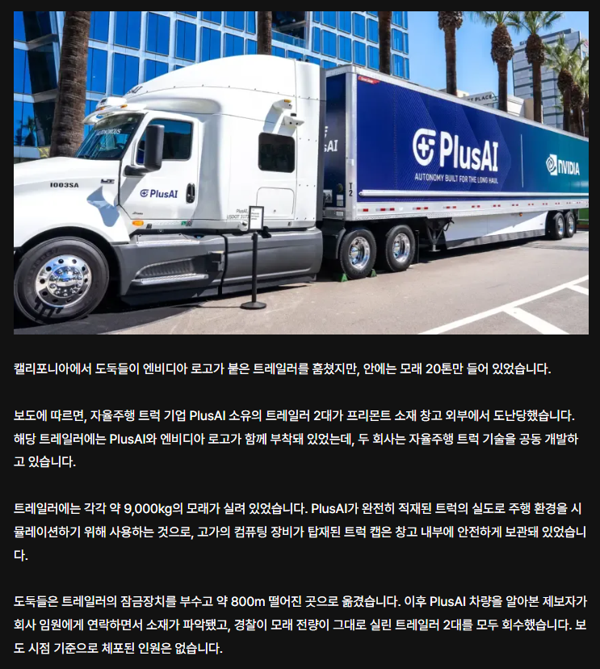

는 9톤 가량 모래로 적재하고 학습중이었던 ai 자율주행 트럭이었음
그런데, 엔비디아에서 나오는 트럭을 대상으로 하는 절도행위가 기승이라는데....
?????
한줄요약 : 아니 그래도 저때 대통령은 정ㅅㅏ.ㅇ... 아 모르겠다 야발 와일드 와일드 웨스트 실사판 진행중

는 9톤 가량 모래로 적재하고 학습중이었던 ai 자율주행 트럭이었음
그런데, 엔비디아에서 나오는 트럭을 대상으로 하는 절도행위가 기승이라는데....
?????
한줄요약 : 아니 그래도 저때 대통령은 정ㅅㅏ.ㅇ... 아 모르겠다 야발 와일드 와일드 웨스트 실사판 진행중
화물에만 관심있었는듯함
차 뜯어내는건 장비도 필요하고 꽤나 수고도 들어가는 일일테고, 엔비디아 써있으니 화물에 비싼거좀 들어있겠지 했을듯
더치의 계획이란게 저거였군
여기까지 내다보신 플랜좌의 계획 ㅠㅜ
코로나 때부터 열차강도도 유행임ㅋㅋ
I have a goddamn plan!
중요한걸 대놓고 로고 붙이고 지나가겠냐고 ㅋ
사이버펑크
아직 가공 안 했는데 원재료를 털었네ㅋㅋㅋ
와 이제 진짜 4~5년 뒤에는 운전이 취미가 되는 세상이 오겠네
차부분 뜯어서 부품 훔치거나 하지는 않았나보네